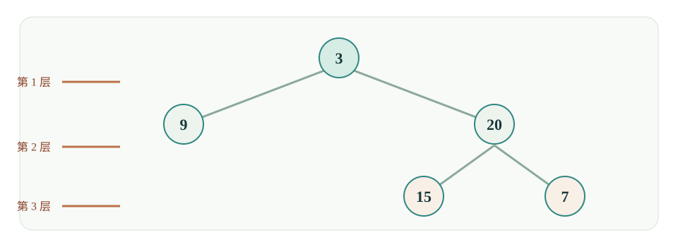
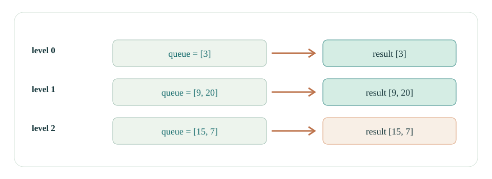
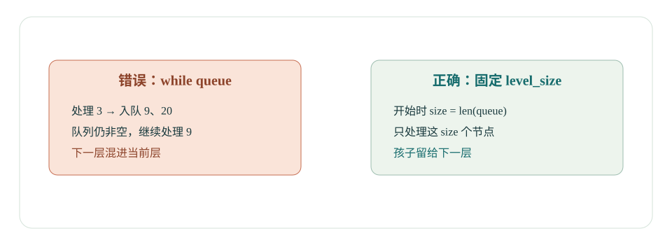

LeetCode 102 · 二叉树的层序遍历
队列保存待访问节点，队列长度划定当前层的边界。
中等 Medium15 分钟BFS / Queue01 · 为什么这里用 BFS？
给定二叉树根节点 root，按从上到下、每层从左到右的顺序，返回每层节点值组成的二维数组。空树返回空列表。
深度优先搜索会沿一条分支走到底；而层序遍历要求先处理距离根节点 1 条边的节点，再处理距离 2 条边的节点。队列的先进先出顺序正好满足这个要求。

02 · 队列长度就是当前层的边界
在每一轮开始时，队列里恰好存放当前层所有尚未处理的节点。先把当前长度保存为 level_size，然后只循环 level_size 次。
- 读取 level_size = len(queue)。
- 循环固定次数，每次弹出队首节点并记录值。
- 将它的左孩子、右孩子依次加入队尾。
- 当前层循环结束后，把 level_values 加入结果；队列里留下的正好是下一层。
每轮开始时，队列只包含同一深度的节点。固定队列长度后，即使处理过程中追加孩子，也不会让它们在本轮被提前处理。
03 · 逐层执行
对 [3,9,20,null,null,15,7]，队列从 [3] 变成 [9,20]，再变成 [15,7]。每一轮只处理开始时快照的节点数。

开始第 0 层：队列长度快照 level_size=1。弹出 3，记录当前层 [3]，把孩子 9、20 加到队尾。
level_size=1 · result=[[3]] · queue=[9,20]
04 · 正确性证明
初始队列只有根节点，它是第 0 层，因此不变量成立。假设某轮开始时队列恰好包含第 d 层所有节点。循环只处理开始时记录的 level_size 个节点，故每个第 d 层节点恰好出队一次；每个节点的左孩子、右孩子按从左到右顺序入队，它们恰好构成第 d+1 层。循环结束后队列只剩第 d+1 层，因此不变量对下一轮继续成立。
每个节点只入队、出队一次，访问顺序保证层内从左到右，层间从上到下，因此结果正确。
05 · Python 参考实现
from collections import deque
class Solution:
def levelOrder(self, root) -> list[list[int]]:
if root is None:
return []
queue = deque([root])
result = []
while queue:
level_size = len(queue)
level_values = []
for _ in range(level_size):
node = queue.popleft()
level_values.append(node.val)
if node.left is not None:
queue.append(node.left)
if node.right is not None:
queue.append(node.right)
result.append(level_values)
return result
| 维度 | 结论 | 说明 |
|---|---|---|
| 时间 | O(n) | 每个节点入队和出队各一次。 |
| 队列空间 | O(w) | w 是树的最大宽度，即某一层的最大节点数。 |
| 结果空间 | O(n) | 返回的二维列表需要保存全部节点值。 |
06 · 常见错误：内层 while queue
如果每层内部使用 while queue，处理根节点 3 后，孩子 9 和 20 被加入队列；由于队列仍非空，内层循环会继续处理它们，导致第二层混入第一层。固定 level_size 才能把当前层和下一层隔开。
